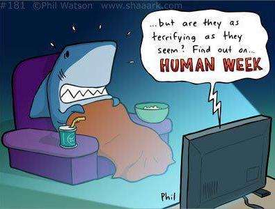

Shark Attack Facts
Out of the 200 million Americans who swim at the beach every year yet only about 36 are even attacked by sharks with less than 4 fatalities. Considering the large amount of beach-goers, instances of shark attacks are very rare. Since 2006, only about 4 fatal shark attacks have occurred per year worldwide. In the US only 3 of the 179 shark attacks were fatal. Meanwhile elephants and tigers collectively kill about 100 people per year. Any beach vacationer has about a 1 in 3.5 million chance of drowning- which means any beach-goer is about 20 times more likely to die from drowning than from a shark attack.
Shark Week Criticism
<<<<<<< HEADWhile it's true that Sharks are extremely good at hunting and killing their prey they have abilities outside of their notoriety as "killing machines". Sharks have many interesting social behaviors
 =======While it's true that Sharks are extremely good at hunting and killing their prey they also have abilities outside of their notoriety as "killing machines". Sharks have many interesting social and ecological behaviors as well as fairly large brains for their size.
>>>>>>> origin/master